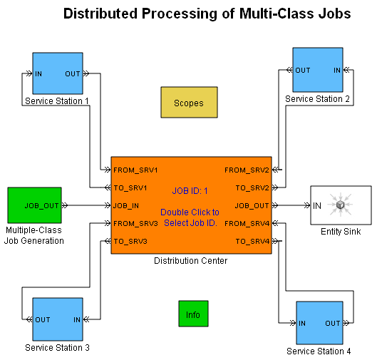

Distributed Processing for Multi-Class Jobs
Contents
Overview
This model demonstrates how to model a central resource that manages distributed processing according to an explicit formula. The terminology in the model describes a distribution center that manages a series of processes that each job undergoes, where each job carries information about the series of processes that it must undergo. One of the applications where it could be useful is a central dispatcher that routes each call from one call processing station to another.
Multiple-Class Job Generation Subsystem
This subsystem produces jobs that possess these attributes:
- JobClass - A value of 1, 2, or 3, which determines the value of ServiceProcess and ServiceTime
- JobID - An integer between 1 and 15. This acts as an identifier for each job. This can be used to track a job as it moves through the different service stations.
- LastServiceLocation - 0 initially, to be modified during the simulation as the job visits different service stations
- JobServiceStatus - A vector of 0s initially, to be modified during the simulation as the job completes different processes
- ServiceProcess - A vector that lists the processes that the job undergoes
- ServiceTime - A vector that lists the duration of each process that appears in ServiceProcess
- CurrentStep - 1 initially, to be modified during the simulation as the job progresses through its series of processes
Distribution Center Subsystem
This subsystem uses the vector elements of each job's ServiceProcess attribute to route the entity to the correct service station. The distribution center also updates information that the job carries about its current state.
During the simulation, each job follows a trajectory from the distribution center to a service station, back to the distribution center, to a (possibly different) service station, and so on. The particular trajectory depends on the ServiceProcess attribute value.
Service Station Subsystems
Each of multiple Service Station subsystems models a particular process abstractly using an Infinite Server block. Upon the completion of service, the job returns to the distribution center.
Results and Displays
The model includes these visual ways to understand its performance:
- A scope showing the service locations for jobs whose JobID attribute has a particular value.
- Scopes showing the load at each service station.
Experimenting with the Model
You can set the particular value in the Display service history for jobs with ID parameter in the Distribution Center subsystem dialog box. Valid values are integers between 1 and 15.